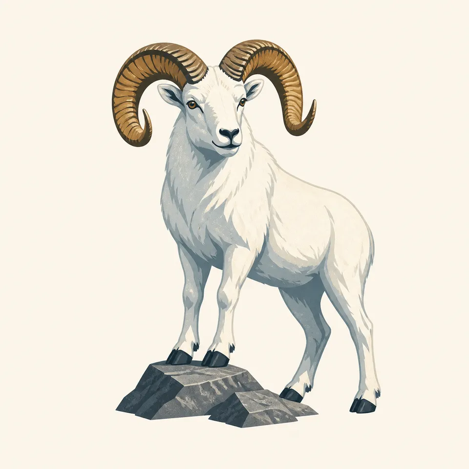
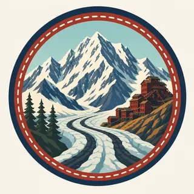

01
Kennecott Mines
A National Historic Landmark since 1986: red mill buildings standing largely as they were left when the mines closed in 1938, after extracting an estimated 591,535 short tons of copper.
TrailMark Archive Edition
Alaska | Wrangell and St. Elias Ranges
Established December 2, 1980, by ANILCA: 13.2 million acres, the largest unit in the National Park System, over the abandoned Kennecott copper works.
Archive No. TM-WRST-063
National Park since 1980
Collection Kennecott Copper
Park Overview
ANILCA established Wrangell-Saint Elias National Park and Preserve on December 2, 1980, the largest unit anywhere in the National Park System. At 13.2 million acres, it is roughly the combined size of Yellowstone, Yosemite, and Switzerland, by the park's own description.
The park holds the greatest concentration of glaciers in North America, more than 3,000 of them covering over three million acres, including three of the ten largest glaciers on Earth outside Greenland and Antarctica: the Malaspina, the Bering, and the Hubbard. Designated wilderness covers 9.6 million acres of the total.
Terrain here rises from tidewater to 18,008 feet at the summit of Mount St. Elias, the second-highest peak in both the United States and Canada, within the Wrangell and St. Elias mountain ranges that give the park its name.
Emotional Thesis
The header painting sets the red mill buildings of Kennecott clinging to a mountainside above a braided glacier valley, snow peaks rising behind. That is close to a literal view: the mill town sits directly beside the ice it was built to exploit, not near it.
Prospectors Jack Smith and Clarence Warner found copper ore as rich as 85 percent pure in 1900; from 1911 to 1938, the Kennecott mines processed nearly $200 million worth of copper, employing 500 to 600 men at peak, before closing and being left largely in place. NPS acquired the buildings and surrounding land in June 1998.
Landscape Highlights
01
A National Historic Landmark since 1986: red mill buildings standing largely as they were left when the mines closed in 1938, after extracting an estimated 591,535 short tons of copper.
02
A piedmont glacier spreading out from the mountains onto the coastal plain like poured batter, roughly the size of Rhode Island, one of the ten largest glaciers on Earth outside the polar ice sheets.
03
At 18,008 feet, the second-highest peak in both the United States and Canada, first climbed in 1897 by an Italian expedition led by the Duke of Abruzzi.
Wildlife
Dall sheep inhabit the park's steep, rocky terrain across the Wrangell and St. Elias ranges, one of Alaska's iconic alpine species. The extra drawing, a ram on a rock outcrop, is the archive's image of that high, rugged habitat.

01
The park's vast, largely roadless terrain supports populations of Dall sheep, mountain goats, moose, caribou, and both black and brown bears across a range of elevations and ecosystems.
02
Wildlife here is spread across 13.2 million acres, making density and sightings highly variable by location, unlike smaller, more concentrated parks.
03
Subsistence use continues within the preserve portions of the park, a legal and cultural use distinct from recreational hunting elsewhere.
Geology
The Wrangell and St. Elias ranges converge here alongside the Chugach Mountains and the eastern Alaska Range, concentrating some of the highest peaks in the United States and Canada within about ten miles of tidewater.
01
More than 3,000 glaciers cover over three million acres of the park, the greatest concentration anywhere in North America.
02
The Malaspina Glacier alone spans roughly 1,500 square miles, close to the size of Rhode Island, as it spreads from the mountains onto the coastal plain.
03
Mount St. Elias's proximity to the coast, rising to 18,008 feet within about ten miles of the sea, is part of what makes its first ascent, by an expedition that spent 50 days on the mountain, especially notable.
The main season for road access to Kennecott, mountaineering, and most visitor services in this largely roadless park.
Fireweed and tundra color the lower elevations before snow returns; access narrows as the season advances.
Extreme cold and minimal services across most of the park; travel requires serious backcountry preparation.
Snow persists at elevation well into the season; the limited road access reopens gradually as conditions allow.
Photography
A glacier alone can be hard to judge in scale from a photograph. The red Kennecott mill buildings beside the ice, as in the header painting, give a viewer something human-sized to measure the valley against.
01
Kennecott's structures, or a hiker on the glacier, are often the only way to convey how vast the surrounding terrain actually is.
02
Kennecott's buildings are a National Historic Landmark; photograph them without entering unsafe or off-limits areas.
03
With four ranges converging and the continent's densest glacier concentration, a distant, unlabeled peak could be almost anywhere; keep a named feature like Kennecott or a specific glacier in frame.
Field Notes
A mill that closed in 1938 still stands beside ice that has kept moving the entire time since.
TrailMark Field Notes

Badge Story
The badge fails if it is only snow-covered mountains, indistinguishable from Denali or Kenai Fjords. Kennecott's red buildings against the glacier are what claim this specific park.
Cool glacier blue-white against warm mill-building red.
A visible glacier valley, not just a peak silhouette.
No brown bear or sheep on the mark itself; wildlife carries its own section separately.
Archive No.063
LocationWrangell and St. Elias Ranges
ReleaseCopper Mill Mark
Stewardship / Safety
At 13.2 million acres with minimal roads, Wrangell-St. Elias demands serious self-sufficiency; historic structures at Kennecott carry their own separate safety rules.
Most of the park has no road access; backcountry travel here requires real preparation, navigation skill, and often a bush plane.
Kennecott's historic buildings include unstable structures; stay on marked, safe routes rather than entering unmarked areas.
Glacier travel carries crevasse risk; proper equipment and experience, or a guided outfitter, are essential.
Weather in a park this large and this mountainous can change rapidly; do not rely on a forecast for one part of the park to hold across the whole area.
Current conditions, fees, and alerts are on the National Park Service site.
Continue the Archive
Denali is one road and one mountain; Wrangell-St. Elias is four ranges and thousands of glaciers with almost no road at all. Kenai Fjords and Glacier Bay, both already open, are the archive's other Alaska ice parks. With this page, all 63 parks are open.